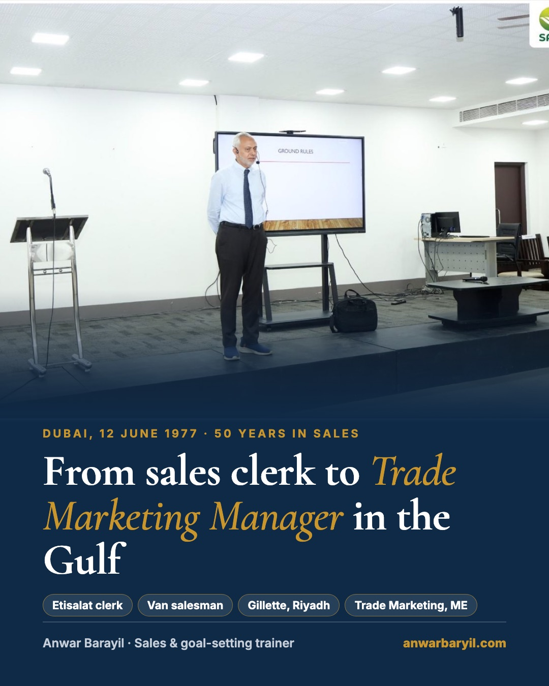

On 1 November I spoke to MBA and PGDM students at SAFI Institute of Advanced Study, Calicut. The topic: why choose sales as a career.
Afterwards the institute ran its own feedback form. 24 students responded. Here is what they said:
• Overall event: 8.5 out of 10
• Clarity of speech: 8.6, with 92% scoring it 8 or above
• Student satisfaction: 8.3
• 96% (23 of 24) want to learn selling skills
• 88% would pay to learn them
The number that matters most to me is the 96%. Students are often told sales is a job you fall into when nothing else works. After one session, 23 of 24 want to learn it properly.
So the gap is not interest. The gap is that very few campuses teach sales as a real career, with real stories from the field.
I am now taking sessions for colleges, institutes and companies in Kerala, Tamil Nadu, Karnataka and Andhra Pradesh: a 90-minute career talk, a half-day goal-setting workshop, or a 1 to 2 day selling-skills course.
Thank you to SAFI Institute for having me.
If you run placements or training at a college, what do your students ask you about sales?
#SalesTraining#Placements#MBA#HigherEducation#Kerala
Most students I meet say "I want to be an entrepreneur." When I ask "In what? What is your first step?", the room goes quiet.
That is not a goal. That is a wish.
At SAFI Institute in Calicut I had two hours of goal-setting material and only 15 minutes left. Even so, all 24 students who filled the feedback form called that part interesting, useful or practical. So here is the short version, in 5 steps:
1. Put the goal posts back. Without goals you run all day and nobody knows the score.
2. Write three levels: 1 lifetime goal, 3 long-term goals (3, 5 and 10 years), 5 short-term goals.
3. Make each one SMART. Not "my own business" but "a mobile shop in Calicut, 10 lakhs saved by 2030". That is roughly 21,000 rupees a month. Now you know what to do this month.
4. Line them up. Short-term goals feed long-term goals, and long-term goals feed your lifetime goal.
5. Write it, show it, share it. On paper, on your desk or fridge, reviewed often, and shared with one person who will follow up.
The slides are in the carousel. Save it and try step 2 tonight. It takes ten minutes.
Which of the five steps do you find hardest to stick to?
#GoalSetting#CareerGrowth#MBA#StudentLife#Leadership
📌 PinnedAnwar Barayil · AuthorI run this as a half-day workshop for colleges and teams: anwarbarayil.com · WhatsApp +91 98402 44034
Anwar Barayil · You
Sales & goal-setting trainer · 50 years in sales
Mon 10 Nov 2026 · 🌐
+ Follow
On 12 June 1977 I landed in Dubai. This year is my 50th year in sales.
I started as a clerk at Etisalat. A government job, 7 to 2, about 8,000 dirhams with overtime. Safe. People said I was set for life.
But I could not see a future in it. So I took a van salesman's job at 4,500 dirhams, selling chocolates in 50 degree heat. Nearly half my salary, gone in one decision. 99.9% of the people around me said I was mad.
Years later I did it again. Gillette offered me Area Sales Manager in Riyadh at 25% less pay. I took it and sent my family to Chennai for a year.
Those two "bad" decisions built everything after. Unit manager. Sales Training Manager for the Middle East. Trade Marketing Manager for the Middle East. Then 20 years running my own businesses in the UAE and India.
This is what I now tell every MBA class:
Many times in life you will have to take tough decisions. Don't look at the short-term loss. Look at the long-term opportunity. And don't always listen to people.
Today I am based in Chennai, teaching sales and goal setting to colleges and companies across South India.
What is the hardest career call you have made, and would you make it again?
#SalesCareer#CareerAdvice#FMCG#Leadership#Chennai

LikeCommentRepostSend
📌 PinnedAnwar Barayil · AuthorMy full story, the student feedback and the session photos are here: anwarbarayil.com · WhatsApp +91 98402 44034